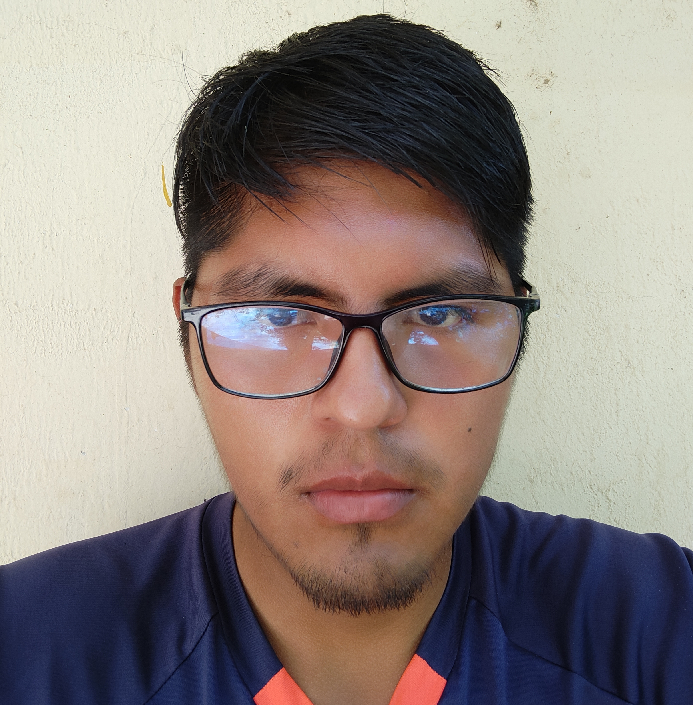

Tec. S. en Sistemas Informaticos
 --Contactos--
--Contactos--
 twitter.com
twitter.com facebook.com
facebook.com 79391735
79391735 --Perfil Profesional--
--Perfil Profesional--
Soy una persona amable, paciente y comunicativa. Tengo muy buenas relaciones interpersonales y aprendo rápidamente. Como profesional, siempre estoy a la vanguardia de las tendencias en mi campo y doy gran importancia a la innovación y el detalle. Tengo experiencia en múltiples áreas de mi ámbito laboral; busco vincularme a una empresa que valore la creatividad y permita a sus trabajadores crecer en el campo laboral.
--Educacion--
Tec.S.Sistemas (2020-2022)
Instituto Tecnico "CIPEC"
Tec.A.Reparacion y matenimiento de Computadoras (2020-2020)
Instituto Tecnico "CIPEC"
.png) --Idiomas--
--Idiomas--
- - Castellano
- - Ingles intermedio
 --Habilidades profesionales--
--Habilidades profesionales--  C#
C# Java
Java Php
Php Phyton
Phyton